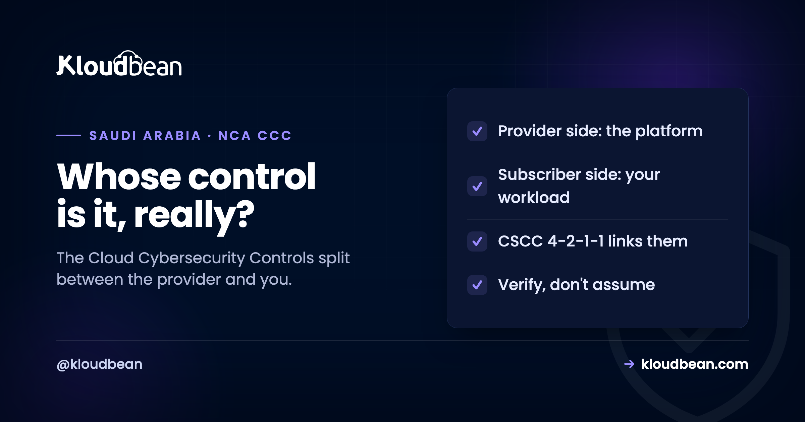

NCA Cloud Cybersecurity Controls (CCC): What They Are, and Whose Job They Are

If you host anything regulated in Saudi Arabia, the NCA Cloud Cybersecurity Controls (CCC) show up sooner or later, usually as a line in a security review or a clause pointing at your cloud. And they cause more confusion than almost any other Saudi framework. Teams ask "are we CCC compliant?" as if it's one checkbox, or assume that picking a "CCC compliant" host makes them compliant by association. Neither is quite right. The CCC is real, public, and important, but it splits along a line most people miss: some of it is the cloud provider's job, and some of it is yours. Get that split clear and the rest of it stops being intimidating.
The Cloud Cybersecurity Controls are the National Cybersecurity Authority's framework for cybersecurity in cloud computing, first published as CCC-1:2020 and classified as public. They set requirements for two parties: the cloud service provider that runs the platform, and the subscriber that hosts workloads on it. Each side owns different controls. The CCC matters for hosting because the Critical Systems Cybersecurity Controls (CSCC) control 4-2-1-1 requires critical systems to be hosted either internally or with cloud providers that comply with the CCC. So for a critical Saudi system, where you host becomes a control, not a preference. Choosing a compliant provider does not make you compliant on its own; your subscriber-side controls and governance still stand.
What the CCC actually is
Start with the plain definition, because the name gets thrown around loosely and the specifics matter.
The Cloud Cybersecurity Controls are one of several frameworks the National Cybersecurity Authority publishes for Saudi Arabia, sitting alongside the Essential Cybersecurity Controls (ECC) and the Critical Systems Cybersecurity Controls (CSCC). Where the ECC is the broad baseline every in-scope organisation works from, the CCC is specifically about cloud computing: the security expectations that apply when systems run on cloud infrastructure rather than in a server room you own. It was first issued as CCC-1:2020, and like the NCA's other frameworks it is published openly, so its requirements can be read and cited directly rather than guessed at. NCA also maintains implementation guidance and has issued provider-focused editions since, so treat the exact version as something to check against the NCA site rather than a fixed number to memorise. The core idea has stayed steady though: if national and regulated workloads are moving to the cloud, the cloud needs its own control set, and this is it.
Which side are you? Provider controls and subscriber controls
This is the section that clears up most of the confusion, so it's worth slowing down for.
Cloud is a shared arrangement by nature. One party builds and runs the platform, the data centres, the hypervisors, the physical security, the core network. Another party rents space on it and runs their own systems there. The CCC recognises that and speaks to both. Some controls are aimed at the cloud service provider, the organisation operating the cloud itself, and cover how that platform is built, isolated, and defended. Other controls are aimed at the subscriber (sometimes called the tenant), the organisation putting a workload on the cloud, and cover how you configure, secure, and govern what you deploy. NCA has even published separate provider-focused guidance, which tells you how seriously the two roles are treated as distinct. So when someone asks whether they are "CCC compliant," the honest first question back is: on which side? You are almost never responsible for the whole framework. You are responsible for the subscriber half, on top of a provider that has to hold up its half.
How CCC fits with ECC and CSCC
The frameworks are a family, not a pile, and CCC has a specific place in it.
The ECC is the foundation, the essential controls most in-scope organisations must meet. The CSCC extends that baseline with stricter requirements for critical national systems, and it's inside the CSCC that the CCC becomes a hosting decision. CSCC control 4-2-1-1 requires that critical systems, and any part of their technical components, be hosted either inside the organisation or with cloud computing services provided by government bodies or Saudi companies that comply with the CCC, with the classification of the data taken into account. Read that slowly and the implication is sharp: for a genuinely critical system, you cannot host just anywhere. The provider's CCC compliance is part of your compliance. That's why the CCC, ECC, and CSCC keep showing up together, and why the NCA CSCC guide points at hosting as a control rather than a shopping choice. If you're mapping which framework applies to you, the NCA ECC hosting guide covers the baseline layer this all builds on.
The part teams get wrong about CCC compliant hosting
Here's where marketing and reality drift apart, and it's worth being blunt about it.
You'll see hosting described as "CCC compliant," and the phrase is doing two different jobs that get blurred. A cloud service provider genuinely can be assessed against the provider-side CCC controls, that's real and it's meaningful for control 4-2-1-1. But you, the subscriber, do not become compliant simply by renting space there. Your own configuration, access control, data handling, and governance are still assessed against the subscriber-side controls and the rest of your NCA obligations. Buying compliant infrastructure is necessary for a critical system, not sufficient for your compliance. The uncomfortable version: a perfectly compliant platform can still host a badly configured, non-compliant workload, and that workload is yours. So treat "CCC compliant hosting" as one input you verify about your provider, not a certificate that transfers to you. Ask the provider for their current CCC standing and the scope of it, and keep owning your side.
Where a managed provider fits, honestly
This is the part where a hosting company usually oversells, so let me be careful and precise instead.
Kloudbean is not a data centre operator. It manages customer workloads on the infrastructure of the large cloud providers, including Google Cloud's Dammam region for in-Kingdom residency. That distinction matters for the CCC. The provider-side, platform-level controls, the physical data centre, the core cloud, are the underlying hyperscaler's responsibility to be assessed against, not something a managed layer certifies on anyone's behalf. What Kloudbean does sit squarely on is the subscriber side: on managed enterprise engagements it configures and maintains the workload's infrastructure controls, network isolation, encryption in transit and at rest, private-only managed databases, access control through VPN and a bastion, centralised and immutable logging, backups with tested restores, and delivers the evidence for them as managed reports. So the honest division is this. Verify the underlying provider's CCC standing yourself, because that's their assessment to hold. Lean on a managed partner for the subscriber-side controls and the evidence. And keep the governance, the data classification, and the formal NCA assessment, because those are yours and no provider can take them on for you. Any host that tells you their plan alone makes you "CCC compliant" is describing something infrastructure can't deliver.
More on NCA Cloud Cybersecurity Controls (CCC)
The CCC lives in a family of frameworks: start with the NCA CSCC guide for critical systems and NCA ECC compliant hosting for the baseline. For the privacy side, PDPL compliant hosting. For the residency questions the CCC raises, data residency in Saudi Arabia and the GCP Dammam region guide. And when you're ready to turn all of this into a build, the critical systems hosting checklist is the practical companion.
Controls you can actually evidence.
On managed enterprise engagements Kloudbean builds and maintains the infrastructure controls, with evidence delivered as managed reports and in-Kingdom hosting available. The policy, staffing, and application-layer work remains yours, which is the honest boundary.
- ✓ In-Kingdom (Dammam) available
- ✓ Centralised logging
- ✓ Immutable log storage
- ✓ Private database access
- ✓ MFA and least privilege
- ✓ Automatic backups
- ✓ Evidence as managed reports
In-Kingdom plans from $36/mo on Google Cloud Dammam · Free migration assistance · Free trial
FAQ
What are the NCA Cloud Cybersecurity Controls (CCC)?
They are the National Cybersecurity Authority's framework for cybersecurity in cloud computing in Saudi Arabia, first published as CCC-1:2020 and classified as public. The framework sets security requirements for cloud, and it addresses two parties: the cloud service provider running the platform and the subscriber hosting workloads on it. It sits alongside the NCA's Essential Cybersecurity Controls and Critical Systems Cybersecurity Controls as part of the same family of frameworks.
Who do the CCC apply to?
Both cloud service providers and their subscribers, but to different controls. The provider is responsible for platform-level controls, how the cloud itself is built, isolated, and defended. The subscriber is responsible for how they configure, secure, and govern the workloads they deploy on it. NCA has published provider-focused guidance separately, which reflects how distinctly the two roles are treated. So the first useful question about any CCC requirement is which side of the cloud it binds.
Is CCC compliant hosting a real thing?
Partly. A cloud service provider genuinely can be assessed against the provider-side CCC controls, which matters because CSCC control 4-2-1-1 requires critical systems to be hosted with CCC-compliant clouds. But renting space on a compliant platform does not make the subscriber compliant, because your configuration, data handling, and governance are still assessed on your side. Treat CCC compliant hosting as a provider attribute to verify, not a certificate that transfers to you.
What is the difference between CCC and CSCC?
The CCC is specifically about cloud computing and its shared provider-subscriber model. The CSCC, the Critical Systems Cybersecurity Controls, is about protecting critical national systems and applies wherever those systems run. They connect through CSCC control 4-2-1-1, which requires critical systems to be hosted with providers that comply with the CCC. So the CSCC is the reason a critical-system operator has to care about a provider's CCC status in the first place.
Does CCC compliance make my system compliant?
No. Hosting on a CCC-compliant provider covers the platform side and is often required for critical systems, but your own subscriber-side controls, data classification, access management, and governance are still assessed separately. A fully compliant platform can still host a misconfigured, non-compliant workload, and that workload is your responsibility. Compliance is assessed against your organisation and how you run your systems, not just where they sit.
Can I cite the CCC document publicly?
Yes. Like the NCA's other core frameworks, the Cloud Cybersecurity Controls are published openly with a public classification, so you can read and reference the requirements directly in your own documentation. Because NCA maintains and updates its frameworks, check the NCA website for the current version rather than relying on a cached copy, especially since provider-focused editions have been issued since the original CCC-1:2020.
Does a managed hosting provider make me CCC compliant?
Not by itself, and be cautious of any that claim so. A managed provider can build and maintain your subscriber-side infrastructure controls and supply the evidence for them, which is a large and genuine part of the work. But the platform-level CCC assessment belongs to the underlying cloud provider, and the governance and formal NCA assessment belong to you. The honest role of a managed partner is the subscriber-side controls and evidence, not a certificate on your behalf.
How does CCC relate to hosting critical systems in Saudi Arabia?
Through CSCC control 4-2-1-1, which requires critical systems to be hosted internally or with government or Saudi cloud providers that comply with the CCC, taking data classification into account. That turns the choice of cloud into a compliance control for critical systems, and it's why in-Kingdom hosting, such as running on Google Cloud's Dammam region, comes up so often for regulated Saudi workloads. The residency and provider questions are two halves of the same 4-2-1-1 decision.